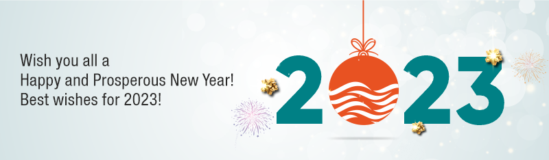

Dear Readers,
In this issue of Adept@Work, I would like to share some exciting news about a few large
projects and export orders.
Recently, we completed the supply of close to 1000 GPRS-enabled Electromagnetic Flowmeters with sizes ranging from
DN 50 to DN 150 for a State Water Board project. We are proud that we got an opportunity to
partner with one of the largest EPC companies in India for this project.
In another significant development, our team received an order for the digitisation of the water distribution network of the entire port city
for India’s leading commercial port operator. A solution built around Ultrasonic Domestic Digital Water Meters (DWM) and the use of
Smart Water Metering Technology with LoRaWAN proved to be perfect for the job.
Our international business division is also demonstrating great performance on the export front.
During the year, they made inroads into three new countries and received major orders from MENA region. This year,
we will witness phenomenal growth in our export revenue and an increased footprint.
Rainfall deficit in many areas due to a change in weather, an increasing population, an ever-increasing demand for water,
and the growing scarcity of water is creating awareness about the careful management of potable water. We are proud of
our contribution in managing this basic necessity of life and a scarce resource, through our Flowmeter solutions.
You will find this as a common thread in all the stories mentioned here and I am sure you will enjoy reading them.
Best wishes to all of you for a happy and prosperous New Year!
Thanking you,
Sincerely yours,
Vinayak Gadre
Managing Director

One of the rain-deficient states of India is investing heavily in creating massive infrastructure
for water distribution and wastewater treatment. Water distribution through closed pipes over several
kilometres will avoid significant water losses. The water saved will benefit the large population in
this parched region. Also, wastewater treatment plants will enable the reuse of some amount of water for
agricultural purposes.
To develop accountability among the beneficiaries of the scheme and to ensure optimum water utilisation,
the government has decided to install Flowmeters at strategic locations. The entire contract for the project
has been awarded to a renowned EPC company in India who, in turn, selected us as a partner for Flowmeter supply
and installation. We have supplied nearly 1000 Electromagnetic Flowmeters (MagBP 6440)
of sizes ranging from DN 50 to DN 150 that are
GPRS-enabled, battery-operated with built-in pressure sensor.
We sincerely thank the State Water Board as well as the project team of the EPC company!

In the month of October 2022, we delivered Ultrasonic Flowmeters (Model UFM 6740)
of sizes ranging from DN 32 to DN 500, to one of our esteemed customers in MENA region.
The Flowmeters are customised with a built-in data logger and the
Flowmeter data is pushed to the local server of the customer through GPRS. Impressed with the performance of our products,
technology offerings and service, the customer has placed a few more orders and some more are under discussion.
After gaining good ground in India, we are expanding our footprint in the global market. This year, in particular,
is going to be excellent for exports with an entry into three new countries and a significant double-digit growth
in the export revenue.
Looking forward to bringing you more exciting news in the next issue!

In a major breakthrough, we supplied over 100 BTU Meters
along with Clamp-on type Ultrasonic Flowmeters (Model UFM 6710) to a leading EPC company.
These will be installed at the Indira Gandhi International Airport, Delhi.


Handling large projects and providing IoT-enabled solutions is now routine for the Adept team.
However, not resting on our laurels, we are constantly refining our technology and looking for bigger challenges.
Recently, one such big challenge came our way when a renowned commercial port operator in India appointed us to set up a
completely digitised water distribution network for their entire port city.
We developed a comprehensive solution built around our proven Ultrasonic type Domestic Digital Water Meters (DWM)
along with the Telemetry System, through which the consumption of each meter is monitored remotely with the help of cloud technology and a user interface.
The project includes ‘Smart Water Metering Technology’ at the customer’s project location, based on an
IoT platform with the LoRaWAN wireless mode of communication. We also supplied a large quantity of Electromagnetic Flowmeters of
sizes DN 25 to DN 65 at the same location for wastewater treatment plants.

In the previous issue of our newsletter,
we made an announcement about our new JV company, Adept Fluidraulics Pvt. Ltd. (AFPL),
which is based in Coimbatore.The company has firmly established itself in South India and recently made major headway in the
North-East market by bagging an order for 15,000 nos. of Smart Multi Jet Water Meters with AMR modules.
This is one of the largest orders received by the company so far.
Heartiest congratulations to the AFPL team!

At Adept, we firmly believe in percolating the organizational values into our team members,
which culminates into a great organisational culture – a culture that develops the utmost concern for
delivering the highest value to our customers and ensures the seamless delivery of a great people experience.
With this intention, recently an orientation programme was held for our key team members to understand and
imbibe the core values and code of conduct of the organisation. All the team members were positively engaged in the
entire programme with proactive suggestions from a few team members for the betterment of the next programme.



Write to us for more information, and to let us know how we can serve you better.
Adept Fluidyne Pvt. Ltd., Corporate Office: Plot 4, S. No. 17/1-B, Kothrud Ind. Estate, Kothrud, Pune 411 038 INDIA
+91 20 2546 4551 / 2543 1474 | digital@adeptfluidyne.com |
www.AdeptFluidyne.com
All names, logos and monograms used in this newsletter are registered trademarks of respective companies/organisations
To unsubscribe, click here or write to us at: digital@adeptfluidyne.com